Nutzer begleiten.
In Echtzeit.
Der Onboarding Buddy ist direkt in Ihrer Software integriert und führt neue Nutzer interaktiv durch jeden Schritt — für schnellere Aktivierung und deutlich weniger Support-Aufwand.

Die ersten 7 Tage entscheiden ob ein Nutzer bleibt oder geht. Der Onboarding Buddy begleitet jeden neuen Nutzer individuell — und macht aus Interessenten echte Power-User.
Drei Kernvorteile
Geführtes Onboarding
Jeder neue Nutzer wird Schritt für Schritt durch die Kernfunktionen geführt — kontextbasiert, individuell und direkt in der App.
→ +40% Aktivierungsrate
Echtzeit-Support
Fragen werden sofort beantwortet — auf Basis Ihrer gesamten Produktdokumentation, ohne Wartezeit und ohne menschlichen Support.
→ 60% weniger Support-Tickets ab Tag 1
Smarte Eskalation
Bei komplexen Fällen übergibt der Agent nahtlos an Ihren menschlichen Support — inklusive vollem Gesprächsverlauf und Kontext.
→ Ihr Team sieht sofort was der Nutzer braucht
Ihr Tool nicht dabei? Wir integrieren uns in nahezu jeden Stack.
Wie es funktioniert
Der Agent in Aktion
Nutzer öffnet App
Der erste Login eines neuen Nutzers wird erkannt. Der Agent aktiviert sich automatisch und bereitet eine personalisierte Onboarding-Session vor.
Agent begrüßt
Ein personalisiertes Onboarding startet direkt in der App — zugeschnitten auf Rolle, Use Case und Erfahrungsstand des Nutzers.
Schritt für Schritt
Der Nutzer wird kontextbasiert durch die Kernfunktionen geführt — genau dort, wo er gerade ist, ohne von seiner aktuellen Aufgabe abgelenkt zu werden.
Fragen in Echtzeit
Jede Frage des Nutzers wird sofort beantwortet — auf Basis Ihrer gesamten Produktdokumentation, ohne Wartezeit und ohne menschlichen Support.
Ergebnisse
Was Sie gewinnen
höhere Aktivierungsrate
weniger Support-Tickets
Time-to-Value
Funktionen
Was der Agent für Sie tut
In-App Chat Integration
Direkt in Ihre bestehende Software eingebettet — kein Wechsel zu externen Tools oder Helpdesks nötig. Nahtloses Erlebnis für den Nutzer.
Zugriff auf Produktdokumentation
Greift auf Ihre gesamte Wissensbasis zu und liefert Antworten mit direkten Links zur relevanten Dokumentation — stets aktuell.
Kontextbasierte Anleitungen
Führt Nutzer Schritt für Schritt durch Kernfunktionen — kontextbasiert und genau dort, wo sie sich gerade in der App befinden.
Proaktive Hilfe
Erkennt Abbruchmuster und Frustrationssignale und bietet proaktiv Hilfe an — bevor der Nutzer aufgibt oder den Support kontaktiert.
Erkennung von Blockaden
Analysiert, wo Nutzer länger als üblich verweilen, und löst automatisch eine passende Hilfsinteraktion aus — ohne dass der Nutzer aktiv fragen muss.
Nahtlose Support-Übergabe
Übergibt bei komplexen Fällen nahtlos an Ihren menschlichen Support — inklusive vollem Gesprächsverlauf und Kontext für einen reibungslosen Übergang.
Bereit für intelligentes Nutzer-Onboarding?
Lassen Sie uns besprechen, wie der Onboarding Buddy in Ihre Software integriert wird — und was das für Ihre Aktivierungsrate bedeutet.
Jetzt anfragen →15 Min · Kostenlos · Unverbindlich